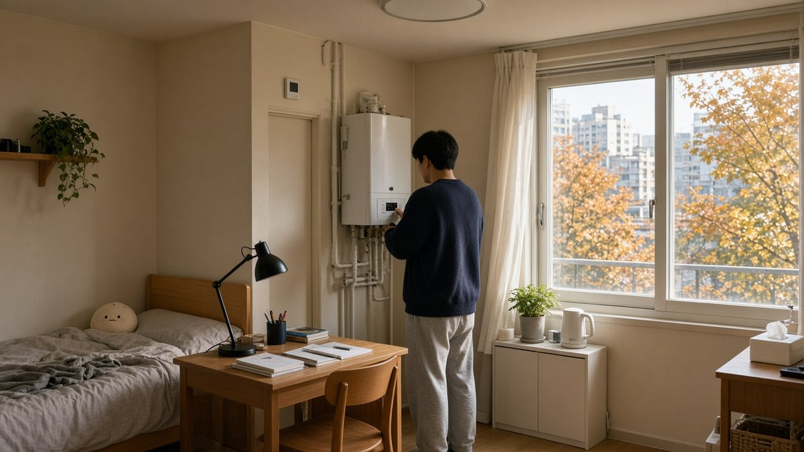

10월은 관악구에서 집을 구하기에 의외로 중요한 달입니다. 2학기 개강 직후의 급구 수요는 한풀 꺾이고, 연말·연초 이사를 미리 보는 사람과 계약 만기를 앞둔 문의가 겹치기 시작합니다.
날씨가 선선해지면 집 볼 때 놓치기 쉬운 것도 바뀝니다. 여름에는 안 보이던 결로·단열·보일러가 겨울 체감 비용을 좌우합니다. 낙성대·봉천·신림에서 원룸을 보는 분이라면, 시세만 보지 말고 타이밍과 겨울 대비 체크를 함께 잡는 편이 안전합니다.
이 글은 2026년 10월 1일 기준, 낙성대역에서 상담할 때 자주 쓰는 가을 이사 가이드입니다. 시세표는 신규 전수조사가 아니라 이전에 공개한 현장 참고 시세를 기준으로 한 참고 범위입니다.
왜 10월인가 — 가을 이사·연말 전 타이밍
관악구 임대 문의는 보통 2~3월(학기·입사)과 7~8월(개강 전)에 몰립니다. 10월은 그 사이 구간이지만, 다음이 겹칩니다.
- 연말·연초 이사 예비: 12~1월은 매물·이사 일정이 한꺼번에 몰리는 경우가 많아, 9~10월에 비교를 시작하면 선택지가 넓은 편입니다
- 계약 만기·갱신: 하반기 만기 세입자와 집주인 문의가 늘어나는 시기입니다
- 방문 비교 여유: 개강 직전보다 낮·저녁 모두 여유 있게 집을 보기 좋은 편입니다
"연말에 구해도 되지 않나요?"라는 질문을 자주 받습니다. 가능은 하지만, 역세권·풀옵션·통학 최단 매물은 미리 빠져 나가는 경우가 많습니다. 10월은 '급하게 계약'보다 비교 후 선점에 유리한 달에 가깝습니다.
낙성대·봉천·신림, 10월에 어떻게 고를까
동네 선택은 여전히 통학·통근 경로 → 예산(월세+관리비) → 소음·채광 순이 기본입니다. 10월에만 특별히 달라지는 점은, 저녁이 빨리 어두워지므로 밤 소음·골목 조명을 한 번 더 보시기 좋다는 점입니다.
- 낙성대: 서울대 통학·역세권 최단을 우선할 때. 셔틀·버스는 학기 중·시간대 제한이 있으니 실제 이용 시간을 확인하세요
- 봉천: 같은 평수 대비 월세 부담을 줄이려 할 때. 낙성대역에 붙은 구간과 서울대입구 쪽 생활권을 나눠 보세요
- 신림·서원: 2호선·신림선 환승 통근이 중요할 때. 대로변 소음은 저녁에 다시 확인하는 편이 안전합니다
동네 비교를 더 자세히 보려면 → 낙성대 vs 봉천 vs 신림 — 자취 동네 고르는 법을 함께 보시면 좋습니다.
겨울 전에 꼭 볼 것 — 난방·결로·보일러

기온이 떨어지기 전인 10월은, 여름에 가려졌던 문제를 미리 걸러내기 좋은 시점입니다. 집 볼 때 아래만 챙기셔도 겨울 후회가 줄어듭니다.
- 보일러: 온수가 나오기까지 시간, 이상 소음, 연소 냄새. 가능하면 난방을 잠깐 올려 보세요
- 결로·곰팡이 흔적: 창문 아래 벽지 얼룩·들뜸, 붙박이장 안쪽, 외벽 쪽 코너. 지난겨울 흔적이 남는 경우가 많습니다
- 창호·틈새: 창틀에 손을 대어 바람 새는지, 실리콘 갈라짐이 있는지
- 관리비·가스: 월세만 보지 말고 난방비·가스·관리비 포함 범위를 물어보세요
- 채광 방향: 남향·동향 여부와 앞 건물 거리. 가을·겨울은 해가 짧아 체감이 달라집니다
💡 수압·소음·채광을 시간 순서로 보는 법은 → 원룸 보러 갈 때 10분 하자 체크에 정리해 두었습니다. 10월에는 그 목록에 보일러·결로만 추가하시면 됩니다.
참고 시세 — 7월 공표 기준·10월 체감
아래 숫자는 2026년 7월 시세 가이드에서 공개한 6월 25일~7월 5일 현장·상담 참고 시세입니다. 10월 신규 전수조사 수치는 아닙니다. 10월 상담 체감으로는 상·하단 폭이 크게 어긋나지 않는 경우가 많고, 역세권 풀옵션·통학 최단 매물은 여전히 빨리 나갑니다. 건물·층·옵션·역 거리에 따라 ±10~20% 차이가 납니다.
| 유형 | 지역 | 보증금 | 월세 | 전세(참고) |
|---|---|---|---|---|
| 원룸 13~20㎡ | 낙성대역 도보 5분 | 500~1,000만 | 50~78만 | 5,900~9,400만 |
| 원룸 13~20㎡ | 봉천 역 8~12분 | 300~900만 | 43~70만 | 5,300~8,600만 |
| 투룸 25~40㎡ | 낙성대·봉천 | 1,000~3,000만 | 72~105만 | 1.45~2.25억 |
| 원룸 풀옵션 | 낙성대역 7분 이내 | 1,000~2,000만 | 55~85만 | — |
※ 전세·반전세는 등기·보증보험 가능 여부를 반드시 확인하세요. → 전세사기 예방 체크리스트
계약 전 10분 체크리스트
- 통학·통근 경로를 지도에서 한 번 걸어본 시간으로 적기
- 월세 + 관리비 + 예상 난방·가스를 총비용으로 비교
- 보일러·온수·결로 흔적·창호 바람 확인
- 저녁 소음·골목 조명을 가능하면 한 번 더 보기
- 등기부등본은 계약일 당일 본인 열람, 전세라면 보증보험 가입 가능 여부
- 입주 후 전입신고·확정일자는 같은 날 처리
맺음말
2026년 10월 관악구·낙성대 원룸 찾기는 급구보다 비교, 시세만이 아니라 겨울 대비가 핵심입니다. 연말 이사를 생각 중이라면 지금 동네·예산·동선만 정리해 두셔도 선택이 한결 쉬워집니다.
프라임에셋부동산은 낙성대역 5번 출구 도보 1분에서 낙성대·봉천·신림 매물을 비교 상담합니다. 입주 희망 시기와 예산만 말씀해 주셔도 됩니다.
함께 읽으면 좋은 글
- 낙성대 vs 봉천 vs 신림 — 자취 동네 고르는 법
- 원룸 보러 갈 때 10분 하자 체크
- 2026년 7월 관악구·낙성대역 원룸·전세 시세
- 전세사기 예방 체크리스트 — 계약 전 3가지
- 관악구·낙성대 부동산 고르는 법 2026
낙성대역 프라임에셋부동산 안내
프라임에셋부동산
주소: 서울특별시 관악구 솔밭로 1 봉천빌딩 1층 (낙성대역 5번 출구 도보 1분)
영업시간: 매일 10:00 ~ 19:00
취급: 관악구·낙성대동·봉천동·신림동 원룸 / 투룸 / 전세 / 월세 중개, 이사·입주청소·가전렌탈·인테리어 원스톱
가을 이사·연말 전 원룸 비교, 난방·결로까지 함께 짚어드립니다. 프라임에셋부동산 홈으로 가기 · 전체 블로그 보기